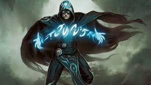
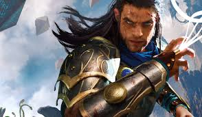
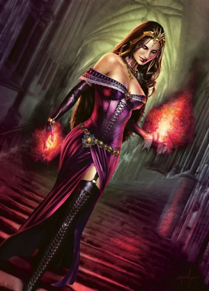
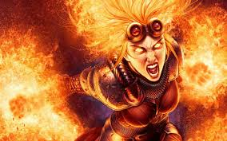
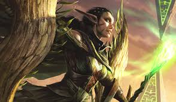
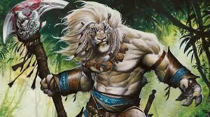
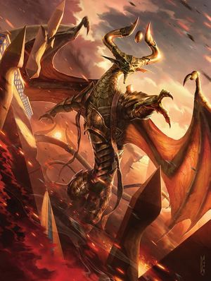
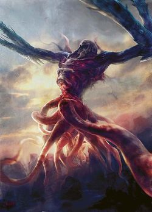
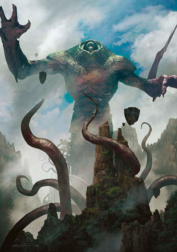
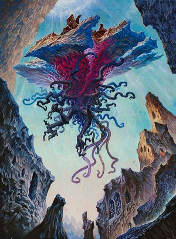

Jace Beleren

Jace is an intelligent mage specalizing in mental magic. From a young age, he was taken in as an apprentice to Alhammarret, a sphinx.
Jace has strong mental prowess but is troubled by his past mistakes. So when he looked into the blind eternities, the space between planes, his spark (ascension) occurred. A spark is the mechanism that allows beings the ability to plainswalk, or travel between worlds or dimensions. These sparked beings are known as planeswalkers.
Alhammarret lied to Jace telling him that the blind eternities was an illusion spell gone wrong. Jace, angered when he found the truth scrambled Alhammarret's mind then wiped his own mind so he wouldnt remember the actions taken in his rage. Alhammarret was put into a vegetative state and Jace planeswalked to Ravnica.
Gideon Jura

Born under the name Kytheon, he started as a common street thug in Akros. His claim to fame was when he fought against hordes with a group of warriors known as the irregulars. He was given the spear of a god as his weapon to fight the commander of the hordes, Erebos, the god of the dead. His invulnerability magic prevented damage to himself but his naivety cost the lives of his warriors and friends. Emotionally distraut, his spark ignited ascending him to Gideon and leaving behind his naivety and thievery to help as many as he could.
Liliana Vess

Liliana was once a renouned healer, curing any who needed help. However, one day her brother fell ill with a sickness she could not heal. She tried everything and eventually found what she thought was a cure. This cure however was a tainted remedy which killed her brother in the process. Her distress caused her spark to ignite. Later, when losing her powers, she made a pact with 4 demons to regain her powers at the cost of her soul.
Chandra Nalaar

Chandra was a young talent with fire magic. She lived on the plane of Kaladesh, a plane imbued with aether, a material allowing futuristic machines to be created. Her powers however were seen as destructive so her and her family was hunted by the government. While on the run, her spark ignited sending her to Keral Keep, leaving her unknowing of her parents' fates. Thus she assumed they were dead. In Keral Keep, her poweres were honed before planeswalking and seeking revenge on the government and the ones who killed her parents.
Nissa Revane

Nissa was an animist, a clan so in touch with nature that they were said to have the blood of the planet in them. One day she had a vision of her plane in distress and sending her on a quest with a friend and the spirit of her plane to try and restore the land. When her friend and the soul left her, she realized her helplessness and horror which ignited her spark and transported her to Lorwyn.
Ajani Goldmane

Ajani is an albino nacatal, the equivalent of an anthropomorphic lion. His spark was ignited when his brother, Jazel, was killed where he planeswalked from his home plane of Naya to Jund. He hunted down the murderer with Sarkahn's advice to be vengeful.
Nicol Bolas

Nicol Bolas is the last of a dragon race known as the Elder Dragons. In an effort to escape, he lost much of his powers, leading to his goal of regaining his power, little by little, even destroying planes to gain more power. He is a dragon towering as high as a god with equal matching ego and manipulation abilities. He is the so called puppeteer behind many lesser villains and aims to destroy all other planeswalkers to solidify his place as the strongest being in the multiverse.
The Eldrazi, Ulamog, Kozilek, and Emrakul
Ulamog (left), Kozilek (center), Emrakul (right)



The horrors from the blind eternaties. They come from the space between planes, where no living thing should exist. These beings are warped, wierd beasts or humanoids in the best of cases, or masses of flesh and spikes in the worst. The terrors are trumped by the Eldrazi Titans, Ulamog, Kozilek, and Emrakul. These titans tower over giants, warp landscape with their presence alone, and seek endless destruction. If one were to try to scale their power, Emrakul is the most powerful but their power cannot be measured easily. A meer touch warps landscapes and warps personalities. Ulamog and Kozilek are capable of spawning more eldrazi minions while Emrakul is able to corrupt, planeswalk, and generally do whatever she wants. Ulamog and Kozilek seem to be able to go into planes while Emrakul seems to be able to go between planes at a whim.